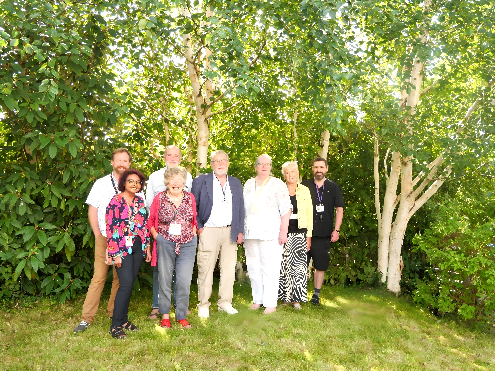

Rooted in the heart of Mid Wales, we are a proudly independent, volunteer-led organisation
made up of local people who truly understand our community's challenges. Our independence
sets us apart, allowing us to be agile, adaptable and focused entirely on meeting the needs
of the community.
We know that every person's situation is unique – there's no "one-size-fits-all" solution.
That's why we take a personal, tailored approach to every enquiry. Our advisers listen with
care, empathy and expertise, ensuring that the support we provide meets each individual's
specific needs.
Getting started with Advice Mid Wales is simple – whether it's a quick phone call, an email,
or a visit during our opening hours. Every enquiry is handled with care by our friendly and
dedicated team, who take a client-centred approach to finding solutions.
We offer advice in person, over the phone, or via video call, and for those unable to visit
us, we may even be able to come to you. All appointments are confidential, impartial, and
non-judgemental. If we're unable to assist directly, we can connect you with trusted partners
through our strong network of referrals and signposting.
We provide a Generalist Advice Service for a wide variety of problems: